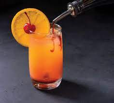

Tequila sunrise
El Tequila Sunrise es una bebida de trago largo, ideal para tomar por la tarde.
Su nombre (amanecer) proviene del efecto que consiguen los ingredientes al mezclarse. Este famoso cocktail da nombre a una canción de la banda de rock estadounidense The Eagles y a una película del director Robert Towne.
ingredientes
- 1 cucharada de azúcar
- Una rodaja de naranja
- 6 cubitos de hielo
- ¼ de vaso de tequila
- ¼ de vaso de zumo de naranja
- ¼ de vaso de ron blanco
Preparación del cóctel Tequila Sunrise
Para su elaboración mezcla el tequila, el zumo de naranja y el hielo picado en una coctelera. Cuelalo sobre un vaso alto y añade los cubitos de hielo hasta llenar el vaso casi por completo. Vierte rápidamente la granadina, para que caiga al fondo del vaso y vaya subiendo lentamente (así conseguiremos ese efecto de amanecer). Adorna con la rodaja de limón, la guinda y una pajita para remover.